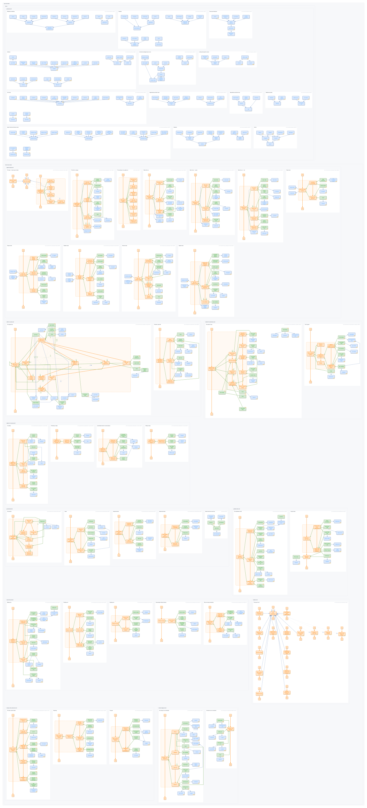

A whole knowledge base on one canvas: every diagram kept exactly as its page draws it, laid out along the source tree, with repeated things and concepts joined by a co-reference overlay you can search and walk.

50 diagrams of one corpus, grouped repo → directory → file. Each panel is the diagram its page renders, by the same engine and the same rules.
ipmt, with its heading path, file, line and commit — nothing to resolve elsewhere.
A knowledge base written in ipm is many small diagrams — one per section of one page. You can merge them into a single graph, and for analysis you should: same name, same node. But merging dissolves the diagrams. A page's story stops being a story and becomes a hub in a hairball, and the picture no longer looks like anything the docs show.
The atlas keeps both halves. Every fragment stays whole as a panel — laid out by the same engine that produced the SVG committed beside its page, so a panel is the picture you already read. Identity becomes an overlay instead of a merge: each node knows every other place it appears, and you can walk there.
The corpus here is ipm-overview — infinite.pm described in its own notation: a concept glossary plus
use-case pages, 50 fenced ipmt blocks in 11 files — one more
block exists (the README's shape example) and is authored out with
union=false: it renders on its page but repeats a claim
render-diagram.md already makes, so the atlas does not carry it twice.
| Panels | 50, in 14 groups (1 repo, 2 directories, 11 files) |
|---|---|
| Nodes | 713 authored boxes, 738 drawn — a panel may draw one participant in several places |
| Anchors | 161, all of them plain identity — the nodes more than one fragment contributes to |
| Biggest | output ::c — the same concept in 15 diagrams |
| Board | 6404 × 13468 px, built in about two seconds |
A thing or concept with the same canonical name
is one anchor across every panel that mentions it. Events are the
interesting case, and this corpus takes the strict line: one name, one event. Where five
diagrams each show a different run they are titled for what they are —
Run the read mode, Run the update mode — and the general event
Run the mode stays an event of its own with the specific ones expressing it —
a read run does not happen inside some larger run, it is one of that kind.
A name is reused only when the event genuinely recurs: the envelope's
Run the tests and its green and red zoom-ins are one event seen three times.
Where a general event has specific ones under it, exactly one diagram carries those kind-of links — the map. It says where each run sits; the detail diagrams say what each one does. That map is the page you navigate from: every event on it is the same event as the one heading its own diagram, so selecting it takes you there.
Containment is the other tree, and it is tested in space and time: an event is part of another
only if it happens inside it — same stretch, same participants. That rules out more than
it sounds. A person's Push a branch is not inside CI's Guard the diagrams in CI;
a visitor's Read the website is not inside Publish a docs site. It is also
why the root, Use infinite.pm, has nothing ordered under it: the ten journeys are not
steps of one big event, they are ways of using infinite.pm, each expressing the root.
Different people take different paths, and most never take some at all. All 112 events reach it.
The board can also link events that merely share a name and kind — an "echo" tier, for corpora that reuse a loose title across unrelated diagrams. Here it finds nothing, which is the point: precise titles plus a part-of hierarchy leave nothing for it to guess at.
None of this is a γ(3,4) relation, and none of it enters the graph. There is no SST arrow meaning "this box and that box are the same node, drawn twice" — asserting one would put a claim in the model that no author made, and every path algorithm would happily walk it. So co-reference lives beside the graph, as an index.
md-embed — results carry a graph summary and a small preview of
the diagram with the match marked.write lock is AND, union/atlas is OR,
mode (design/review) groups.3/10 means the third of ten
panels the thing appears in. Walk them with
n / N or by double-clicking — and the walk now brings a small
floating card along, beside each landing: your position n/m, the anchor, the panel
and its locator, with ‹ › to keep going. Pin it away and it stays away.1/2 is which of those
places you are looking at, inside that one picture; double-press walks them. Seven
participants are drawn twice on this board — fourteen badged places — and the rest are
not: the pass leaves a small panel alone, because a copy in a small picture reads as a
fork rather than a second place. Same thing, drawn where it is used — top-right, where in this picture;
bottom-right, where on this board.Since this experiment first shipped, the viewer itself was rebuilt: the server now sends structure — the board model plus one SVG fragment per panel — and the browser composes the picture, chrome and all, on a core it shares with the zoom canvas. Same reading experience, one codebase behind both. The side panels are yours to arrange — collapse them, float the inspector and drag it next to what you are reading — and a composite-bearing panel opens as a click-path zoom in place. The offline file carries the frames a size gate bought and greys the rest; the served board builds any state on request.
Nothing here needs a link resolved to be understood. The board carries every panel's own
ipmt: select a node and the inspector shows the fragment its diagram was drawn from,
under its heading path, file and line. The same fragments are published beside it as
50 .ipmt files, each with a comment header naming the
section, the locator and the exact commit — so the picture, the graph and the text that produced
them stay together.
A first working pass. The board is static per panel — no zooming inside a panel yet (that is the zoom layout experiment, one level below). Open questions: what to do when a corpus has thousands of panels, whether groups should fold, and how to tell "the same name" from "the same thing" across unrelated repositories.
{kind=link}